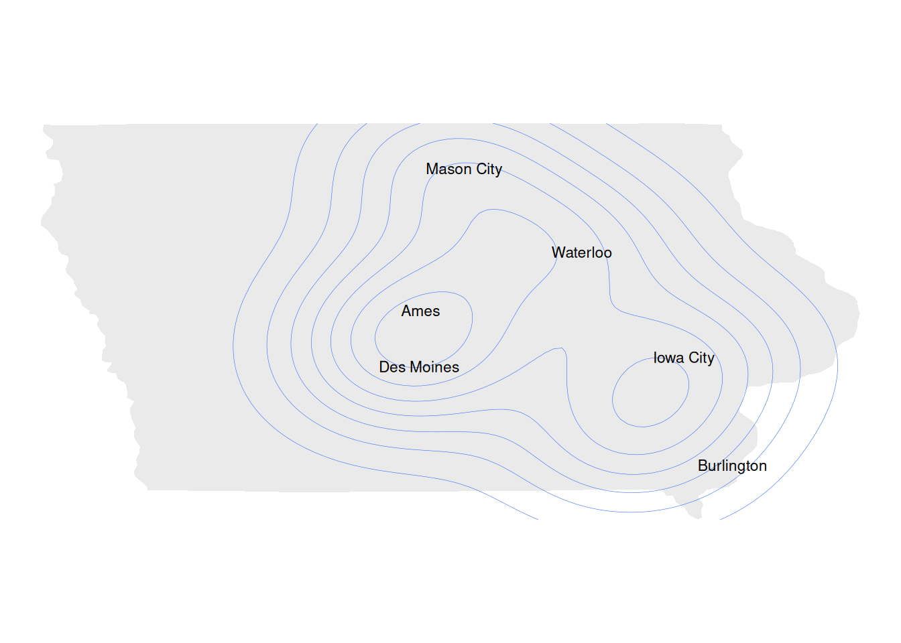

Where from?
I’m from West Des Moines Iowa, so those familiar with Des Moines know I didn’t travel too far from home for college. Below is a little density plot of approximately where I’ve been in Iowa.

What year?
I’m currently a senior and will be graduating from Iowa State in the fall!
Your department?
I’ve been studying Data Science for a couple of years now, I started in medicine at Grand View University (school in Des Moines) then after injuring myself in football, I decided to change the direction of my life I went home and took some general classes at my local community college and studied varies fields that I could potentially be interested in because I had a lot of time to myself for an independent study I decided to try getting into computer science and took some online courses and found it to be something I enjoyed. I still wanted to pursue a career that wouldn’t leave me working alone, so overtime shifted out of computer science and into data science, and for the last two years, it has been my main focus.
Plans?
I’m planning on working in data analyst jobs and/or data research opportunities for the next few years until I complete my masters in advanced analysis at which point I’ll start looking into data science positions.
Why care about DS?
I believe that Data is currently a very untapped commodity at the moment with exponential growth potential in the future. Just like it took centuries to build the massive oil rigs that we have today to fuel the world with energy, it will take centuries to build the AI to power the world with information. I want to be part of this massive infrastructure project that the world is working on right now.
Experience?
The work I’ve done for my DS capstone project has already shown lots of overlap and involved lots of data science techniques.
Hobbies?
I love playing the guitar in my free time, I pretty much play every day. I try to exercise when I can but it comes and goes depending on motivation, currently, I’ve been training for a triathlon so I have been exercising more.
Interesting thing about me
I enjoy debating and like debating social issues, I debated more at Grand View, but I hope to start debating here at ISU in the fall. This last year I went to the chess club instead of the debate club.
Part 2
What skills do you value and appreciate about yourself?
I really value my guitar skills and my coding skills.
- I’ve spent so many hours in the last couple years playing guitar trying to learn every song I enjoy listening to.
- Pre chatgpt being popular I spent alot of time learning to code and do multiple coding online courses and like 200 coding problems on Leetcode, looking back now most of what I learned became irrelevant due to chat gpt but I still developed a skill that has been deteriorating the more I use GPT unfortunately.
DS skills
I scored “The thinker” on the personality test we all took on day one, and I do think that represents me well. I enjoy coming up with new ideas for solving problems. Not giving up on finding actually meaningful results that can have a postive impact.
three skills you want to develop
Python and R are extremely important skills for data science and I have been working with the long enough to know how valuable they can be. I also really like using Tableau, I think it’s popular for a reason, for being as high level as it is it can do some pretty complex things such as being able to use SQL to manipulate data while in tableau.
why these skills?
I’m pursuing these skills because I believe they are the best tools for data sciences to become successful. It’s a safer bet to say that in Python and R will still be relevant in 10 years but some of the higher level skills may be replaces by ai or somethings even higher level.
how are you going to improve skills?
Work on them everyday. The more I work with these technologies the more comfortable I will get with them overtime and the faster I can get things done with them.